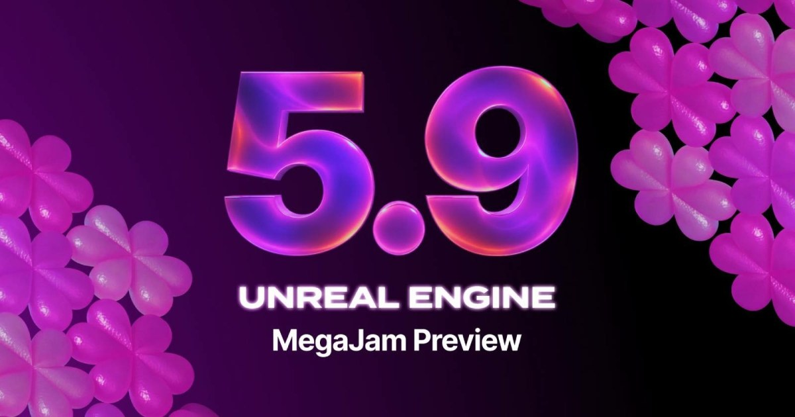

01
Unreal Engine 5.9 預覽版：以代理工作流程移植 AI 工具並恢復網頁平台支援
80 Level 報導 Unreal Engine 5.9 MegaJam 預覽版加入 Python 與 AI 輔助工具，並以 WebAssembly、WebGPU 支援瀏覽器執行；這次版本的 QA 時間短於平常，部分網頁渲染程式仍是原型。

Unreal ★★★★★
完整分析
技術流程：移植工具與網頁平台
報導引述 Epic 說明，少數工程師指揮代理移植 UE6 分支的 AI 工具，並以 UE4 已退役的 HTML5 平台為起點撰寫網頁平台程式；工程師仍負責指導、審查與測試。
製作影響：編輯與輸出選項
預覽版包含 Unreal MCP、Unreal Assistant 與內容製作工具 Unreal Canvas，也加入 Lumen World Cache 和 Nanite 剔除改進。網頁輸出則使用 WebAssembly 與 WebGPU，讓專案多一個瀏覽器執行目標。
成熟度限制：縮短的驗證期
這次預覽約用一週組裝，QA 期間較短；Epic 表示仍在清理代理撰寫的程式，部分網頁渲染器將於正式版前重構。原文建議以專案副本測試，不能把此預覽當成已完成穩定性驗證的正式版本。
BRIEF｜來源已驗證；證據深度較有限，完整分析會明確區分已知資訊與待驗證事項。